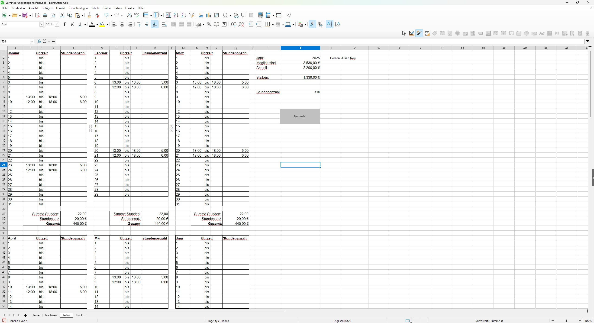
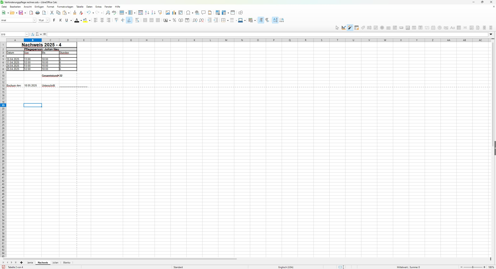
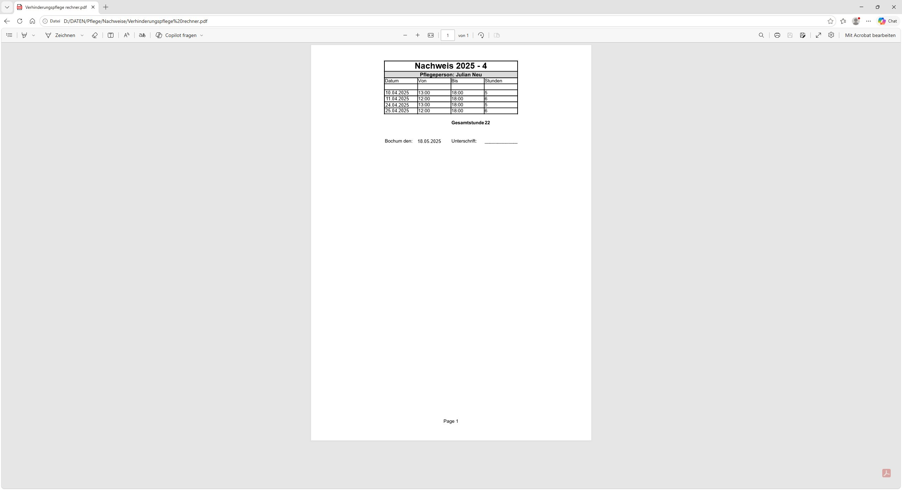
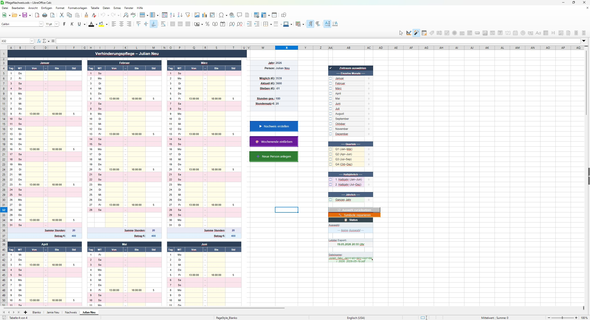
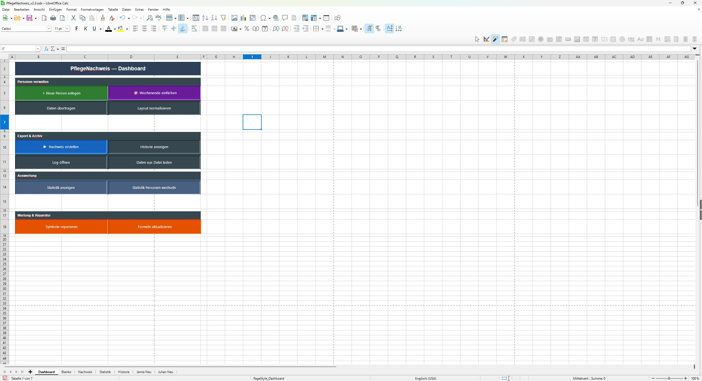
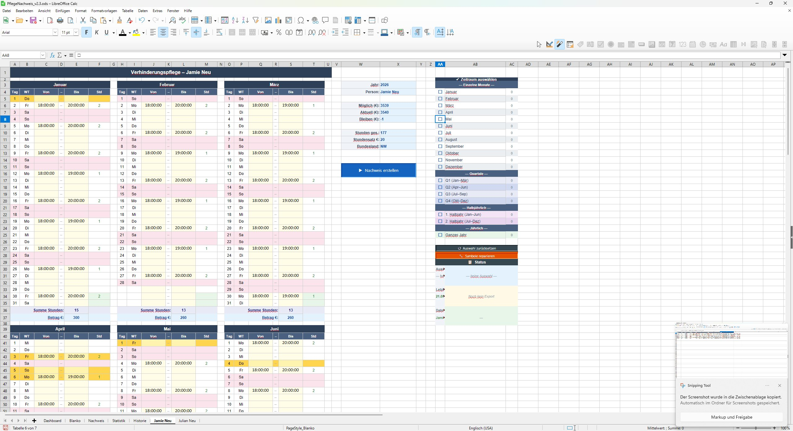
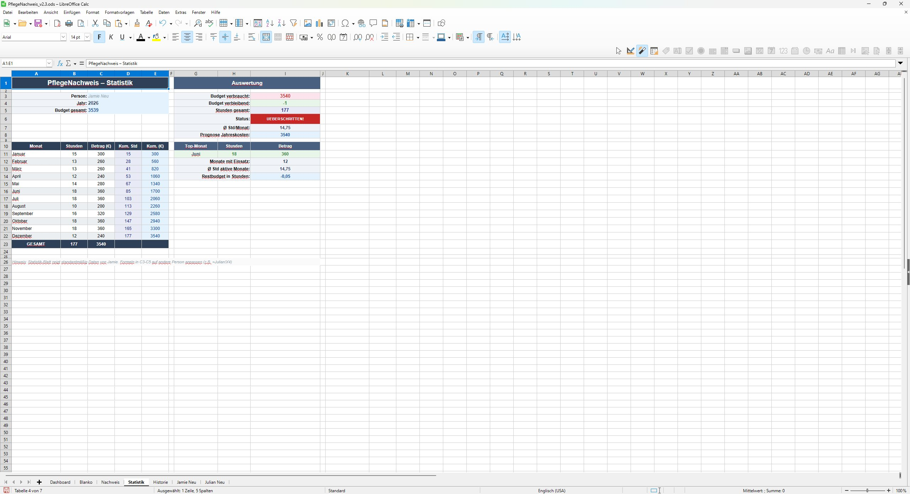
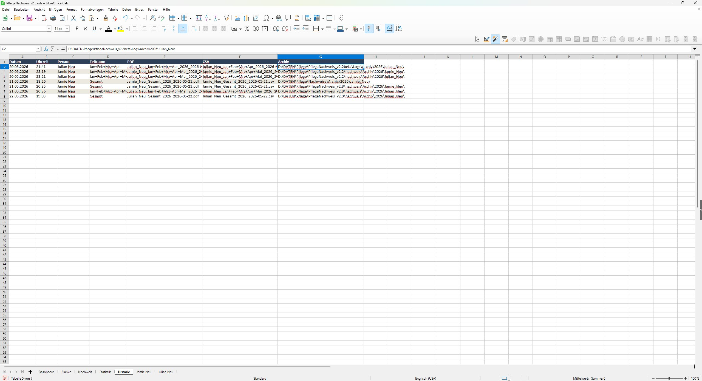

Eine Tabelle für die Verhinderungspflege
Pflegra begann nicht als Softwareprojekt. Es begann am Küchentisch.
Wie viele pflegende Angehörige standen auch wir vor derselben Herausforderung: Nachweise, Fristen, Bescheide und immer mehr Papierkram. Am Anfang gab es nur eine einfache Tabelle für die Verhinderungspflege. Sie half uns, Stunden zu dokumentieren und den Überblick über das verfügbare Budget zu behalten.

Die erste Version: eine einfache LibreOffice-Tabelle mit Stundeneintragungen
Automatische Nachweise per Makro
Schnell wurde klar, dass die eigentliche Arbeit nicht das Eintragen der Stunden war, sondern das Erstellen der Nachweise. Deshalb entstand das erste Makro, das automatisch unterschriftsfertige Nachweise als PDF erzeugte.

Nachweis in LibreOffice Calc

Automatisch erstellter PDF-Nachweis
Mehr als nur eine Tabelle
Aus der einfachen Tabelle wurde eine kleine Anwendung. Mehrere Personen konnten verwaltet, Zeiträume ausgewählt und Nachweise automatisch erstellt werden. Quartale, Halbjahre, das gesamte Jahr auf einen Blick.

PflegeNachweis 2.0: Jahresübersicht mit automatischer Nachweis-Erstellung
Das erste richtige System
Mit Version 2.3 war aus einem Hilfsmittel ein richtiges System geworden: ein Dashboard, Mehrpersonenverwaltung, Statistiken und eine automatische Archivierung aller erstellten Nachweise.
Doch je größer das Projekt wurde, desto deutlicher wurden die Grenzen einer Tabellenkalkulation.

Das Dashboard von PflegeNachweis 2.3

Mehrere Versicherte

Statistiken & Budget

Automatisches Archiv
Aus PflegeNachweis wird Pflegra
Alles, was auf dieser Seite zu sehen ist, wurde ursprünglich für unsere eigene Familie entwickelt. Nicht für Kunden. Nicht für Investoren. Sondern weil wir selbst dieselben Probleme hatten wie viele andere pflegende Angehörige.
PflegeNachweis bestand am Ende aus zahlreichen Tabellenblättern, Makros und Automatisierungen. Neue Funktionen wurden immer schwieriger umzusetzen. Deshalb fiel die Entscheidung, das gesamte Projekt als moderne Webanwendung neu zu entwickeln.
Mit jeder neuen Funktion wurde deutlicher, dass die Möglichkeiten einer Tabellenkalkulation irgendwann an Grenzen stoßen. Aus PflegeNachweis entstand deshalb Pflegra, eine moderne Webanwendung, die auf jedem Gerät genutzt werden kann.
Pflegra heute
Dokumente, Fristen, Budgets, Pflegeberatungen, Gutachten und der gesamte Pflegealltag an einem Ort. Was als einfache Tabelle begann, begleitet heute Familien dabei, den Überblick zu behalten und sich auf das Wesentliche zu konzentrieren: die Menschen, die sie pflegen.
Und wir haben eines dabei nie vergessen: Pflegra wurde nicht für Investoren gebaut. Es wurde aus echter Pflegepraxis heraus entwickelt. Das war der Anfang und das bleibt der Kern.